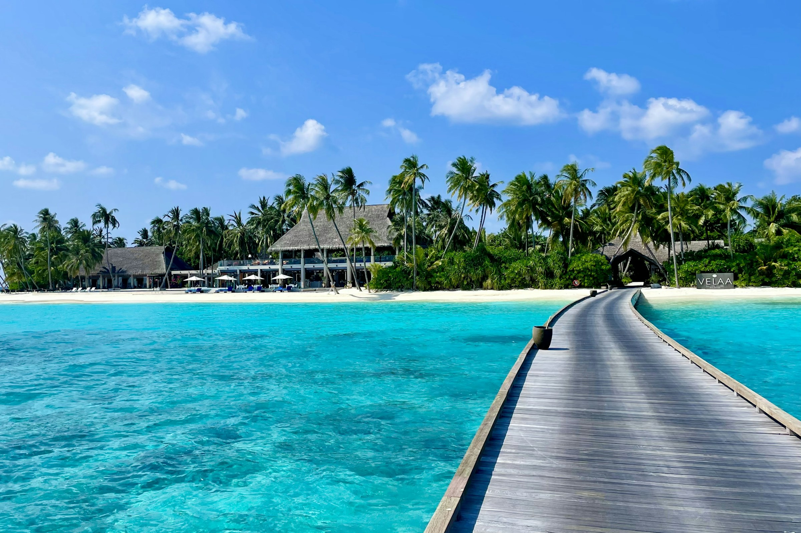
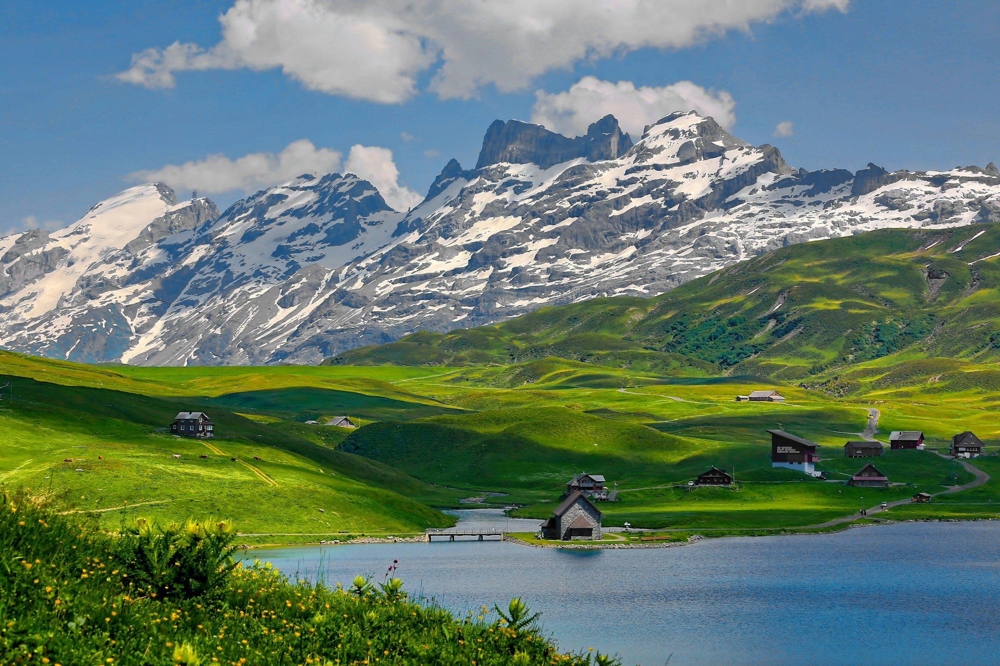
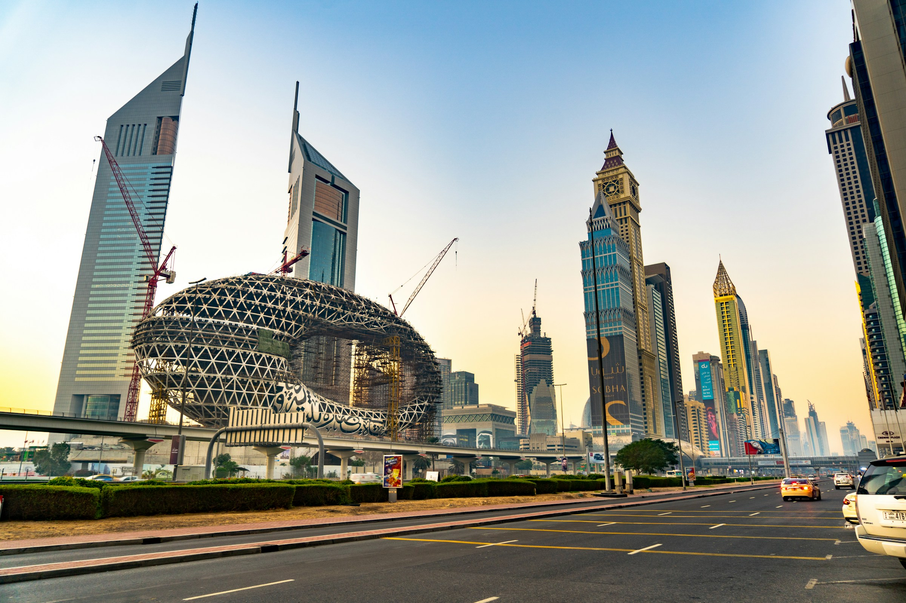
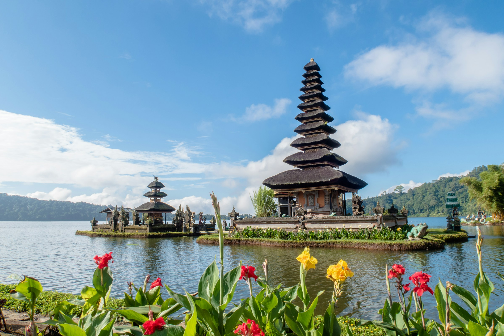
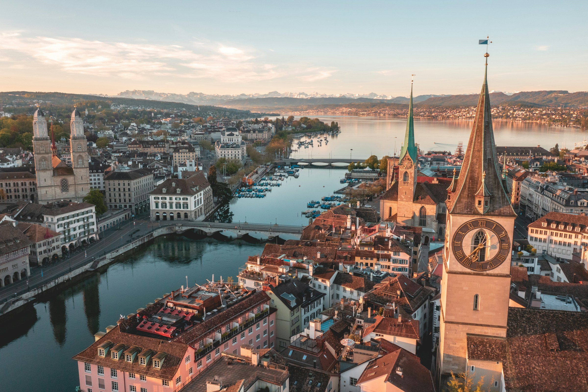
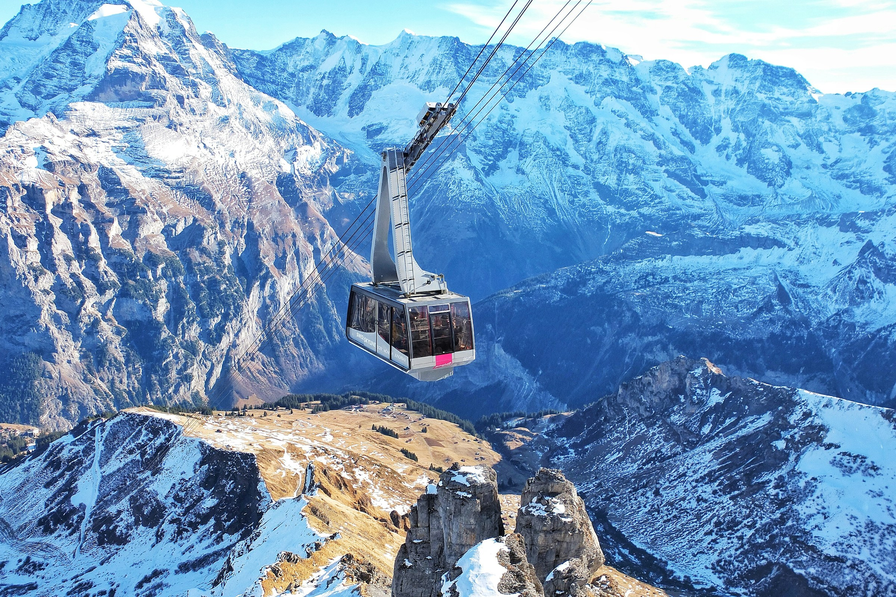
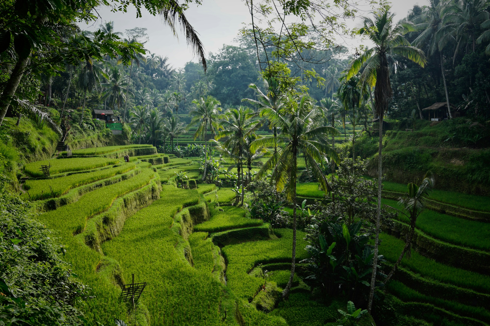
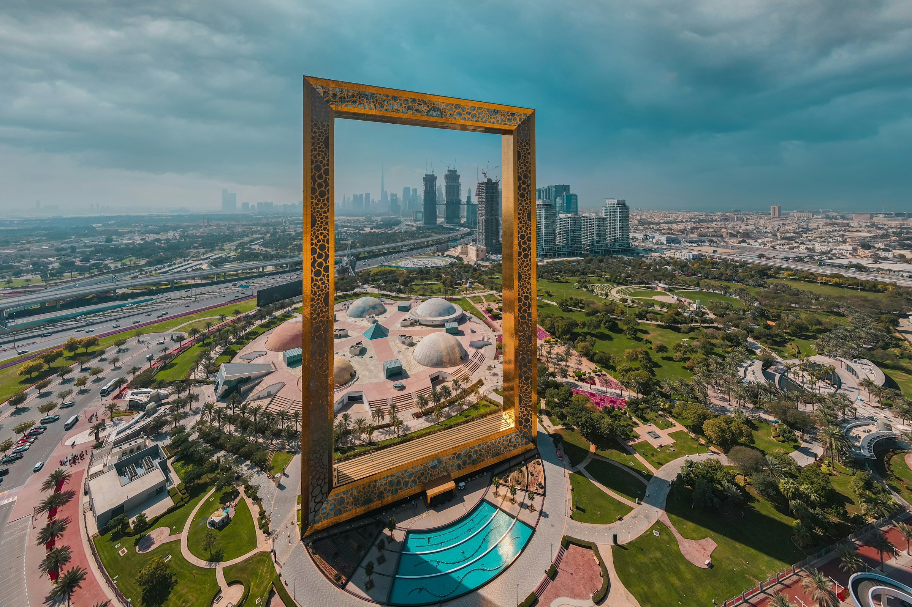

BEYOND BOUNDARIES
Discover your world.
From tropical islands to timeless cities, find international journeys shaped around how you want to travel.
FARTHER, AT YOUR OWN PACE
A world of possibilities.
Start with a region, a feeling, or a place you've always wanted to see.
6 destinations to explore






GO FURTHER
Some journeys deserve a passport.
Make the trip your own — from an island reset to a city-to-city adventure. We'll help you think through the details and pace.
Go further. Come back with a story.
Let's find the journey that feels right to you.